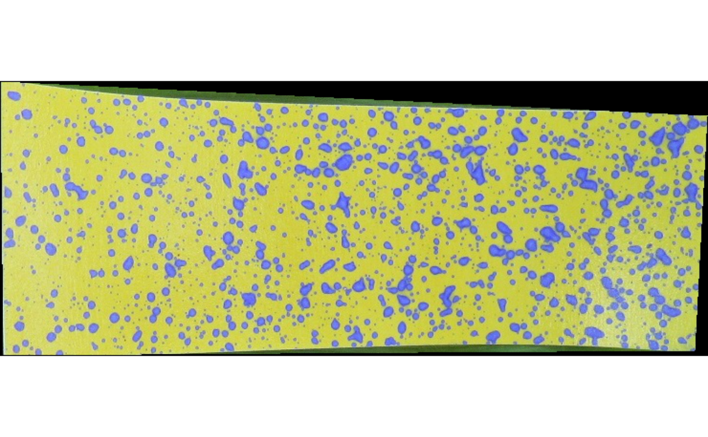

Click on four points on the image or use the package trained neural net to automatically clip the water-sensitive paper, for further analysis.
Usage
clipPaper(x, method = c("auto", "manual"), align.x = FALSE, display.it = TRUE)Arguments
- x
Either an object of class
Imagefrom package EBImage or a character indicating the path to the image file (.jpg, .jpeg, .png, .tif).- method
One of the two characters:
"auto"or"manual"to be used to clip the paper from the image.- align.x
Logical. IfFALSE(default), the paper will be rotated to align with the x-axis.- display.it
Logical. IfTRUE(default), the clipped paper will be displayed.
Examples
path <- system.file('images', 'field1.jpg', package = 'hydropaper')
p1 <- clipPaper(path, method = "auto", display.it = FALSE)
display(p1, "raster")
